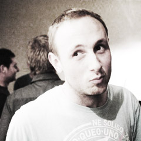

Introduction
Will Rossiter is a 23 year old who spends far too much of his time on the computer, building and designing web and mobile websites, games and applications.
After building and launching his first web startup in 2004 at the tender old age of 14, he's gone on to work with several local and international companies in a variety of web design and software development roles.
In those roles he's gone on to build and deploy innovative solutions in use today by millions of people worldwide including workflow tools, GUI based editor tools, mobile websites, open source themes and training software.
When Will isn't hacking away at a keyboard, you'll find him chasing around after a ball, umpiring junior sports, checking out the local music acts or traveling around the world. Over summer he'll be camping or defending his fishing title [1].
Education
Will graduated Victoria University with a Bachelor of Science (COMP) in 2011 after achieving NCEA level 3 in 2007.
Over the duration of his Bachelor of Science degree he studied a range of papers from each of the mathematic, statistic, computer science and information system disciplines with a strong focus towards designing and building software applications. As was as the compulsory papers, several research based topics allowed him to dive into topics such as artificial intelligence, augmented reality and 3D gaming.
On top of his degree, he has several other academic strips including picking up a scholarship to research applications of geospatial data.
Some of the highlights of his course work grades are marked below.
Experience
Will is an experienced software developer with specialty in building websites, mobile applications and interactive displays.
Under the all encompassing umbrella of a web developer he's held roles at companies involving most disciplines from branding and interaction design through to server side development, database programming and server administration.
DNA Design (2012-)
Senior Developer at DNA Design in Wellington. Work includes a wide range from front end interaction development, backend programming and infrastructure support.
Victoria University (2011)
Research assistant to Dr Hui Ma researching the real time processing and application of geospatial data between heterogeneous and distributed data sources.
SilverStripe (2007 - 2011)
Daily tasks involved liaising with clients and building both backend (PHP) and front end (Javascript) solutions for SilverStripe's corporate clients and internal projects.
Key part of the team for fulfilling support requests because of his all round skills and quick problem solving ability.
Still involved with the open source project as a core developer helping moderate, review and maintain the growing the international community base.
Fullscreen Interactive
Director of web and mobile consultancy. Fullscreen Interactive leads prototyping, design and development for several early stage startups including JustSold, Radarr and Whippett.
Provide advice and training for other web developers on everything from performance and scalability questions to code reviews.
Escape Media (2006 - 2007)
HTML & CSS development of templates and implementation of wireframes into semantic HTML and Wordpress themes.
A selection of the most commonly used tools and languages used in previous roles
- HTML / CSS (Advanced)
- PHP (Advanced)
- Javascript (Intermediate)
- Version Control [svn, git] (Intermediate)
- Python (Intermediate)
- ActionScript (Intermediate)
- Ruby (Intermediate)
- Java (Intermediate)
- PostgreSQL / MySQL (Intermediate)
- Adobe Creative Suite (PS, AI) (Intermediate)
- Unix / Server Administration (Intermediate)
- C# (Intermediate)
- Redis, CouchDB, Mongo (Intermediate)
Portfolio
Metlink Wellington
Technologies: PHP, MSSQL, JavaScript, Google Maps (KML), Web Services
Key Skills: Web service integration, Performance testing, Mobile Development
Metlink provides public transportation information to over 400,000 users monthly, 80,000 of those on the mobile site [2].
Will worked on the rebuild, refactoring and ongoing maintenance of Metlink including the overhaul of the mobile site. He lead the introduction of real time data (RTI) into both the mobile and desktop sites.
Other work included implementing performance improvements, usability testing and increased Google Analytics insights into user behaviour.
Faculty of Graduate Research
Technologies: PHP, CSS3/HTML5
Key Skills: Business Analysis, Agile Methodologies
Victoria University wished to streamline the process for gathering progress reports on post graduate students. The current system involves a paper based form with up to 10 pages and requiring 5 signatures from throughout the university.
Will lead the team to gather requirements, build prototypes, design and implement the web application before rolling out the new solution to over 2000 students, 1300 supervisors and 20 schools.
The implemented software integrates with Victoria's current software and provides their staff with real time status updates of all the students reports saving time and paper.
College Herald
The College Herald features work submitted from students all over New Zealand.
Front end web development (HTML/CSS) and integration with PHP backend (SilverStripe).
Completed project while at SilverStripe.
Don Brash
Don is one of New Zealand's leading economic and financial policy advisers.
This work included branding and front end development work for his personal site.
Join my dots
Web design and backend development.
Completed project while at SilverStripe.
The Women's Conference ®
Front and backend development of the online side of the popular conference run by Maria Shriver.
The site included video streaming, forums, several blogs and served over half a million page views during the conference.
FLIPS
Part of Will's final year of study, COMP348 Game Development required the design, production and demo of a complete, playable, 3D game in less than 12 weeks with a great team. FLIPS went on to get highly commended remarks from the audience of peers and industry experts and lead to being sponsored to attend AnimFX 2011.
Publications, Awards & Mentions
Getting up to speed with SilverStripe
Software Freedom Day, 2009
A presentation by Will and fellow SilverStripe community member Simon Welsh on an introduction to SilverStripe.
Given at Software Freedom Day 2009 at the Town Hall in Wellington, New Zealand.
Converting Static into Content Manageable
PHP Architect, November 2011
An article for the Introduction to SilverStripe series on PHP|Architect.
The article covers some of the features of the Sapphire template engine and the framework in general.
Top 50 Free HTML/CSS templates.
Smashing Magazine, May 2008
Two open source HTML templates designed by Will were included in Smashing Magazines review of the top open source HTML/CSS templates.
At last count, his open source themes have been downloaded over 500,000 times since 2006.